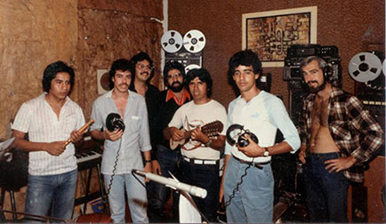

(1983-1986)
Caracas, Venezuela, Director: Alfredo Rugeles
Cassette: La Voz del Canto Latinoamericano (KY-001)
Folklore latinoamericano (arrg. Alfredo Rugeles y Kei Yumei) y una
composición de Emilio Mendoza.

Marisela (Emilio
Mendoza, arrgl. Kei Yumei, grabación Estudios Grau, 1983)
Zumba que Zumba con Seis (trad. ven., arrgl. Kei Yumei)
Integrantes Alfredo
Rugeles, dirección, voz, guitarra
Juan
Cadimas, percusión
Fernando
Fermín, voz, guitarra
Emilio
Mendoza, bandola llanera, guitarra, cuatro, seis,
tiple, percusión
Erick Moctezuma, sikus, tarkas, quena, percusión
Freddy
Moreno, voz, cuatro, percusión
Marco Moreno, voz, guitarra, percusión
Walter
Rodríguez, sikus, tarkas, quena, charango